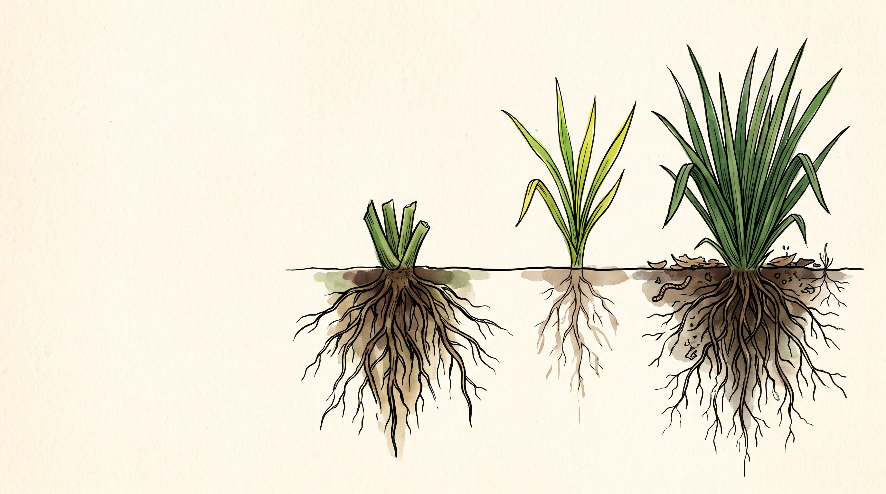

Parar a tiempo
también es producir
El único principio que se aplica sin hacer nada, y el más difícil.
Hoy cerramos en
tres movimientos.
El descanso como fertilidad y el pastoreo racional completo.
Los siete principios aplicados sobre fincas reales de ustedes.
Por dónde empieza cada uno el lunes.
Los 7 principios de
inmunidad del bosque
Seis principios dicen qué hacer. Este dice cuándo quedarse quieto, y por eso cuesta tanto.

El bosque produce
todos los años, no
todos los días.
Ningún sistema vivo trabaja a plena carga sin parar. El bosque alterna, acumula y después explota. Nosotros aprendimos a exigirle producción constante, y por eso compramos fertilidad todos los meses.
«Hay que producir
sin parar»
Tierra ocupada todo el año, potrero con animales todo el tiempo, lote que nunca se queda quieto porque quieto no renta.
El resultado lo conocemos: rendimientos que bajan, insumos que suben y un suelo que cada año exige más para dar lo mismo.

La planta vive de
sus reservas
- Sin hoja deja de fotosintetizar y tira de la raíz.
- Mientras rebrota, la raíz se achica.
- Cortada antes de reponer, arranca con menos.
Repetido muchas veces, la raíz se vuelve superficial y el pasto deja de responder.
La curva sigmoide de Voisin

Doce días de paciencia valen diez veces más
Diez veces más biomasa con la misma lluvia y la misma tierra. Lo único que cambió fue la espera.

Parar es producir hacia abajo
- La raíz se profundiza y alcanza agua y minerales que antes no tocaba.
- Los exudados vuelven a alimentar la microbiota.
- El suelo se cubre, baja la temperatura y la macrofauna trabaja.
- Se acumula carbono, que es agua retenida para la próxima sequía.
Tres descansos que casi nadie programa
Entre ciclo y ciclo va cobertura, leguminosa o abono verde. Nunca suelo desnudo esperando.
Veinticinco días en lluvia, treinta y cinco en sequía. El número real sale del rebrote.
Una finca diseñada para agotar a quien la atiende tampoco es sostenible.
Lo que manejas
es tiempo.
Cada cuánto siembras, cada cuánto riegas, cada cuánto entras al potrero, cada cuánto aplicas. El agrónomo convencional ajusta dosis. El regenerativo ajusta ritmos.
Y el tiempo no se compra en ningún almacén agropecuario.
Pastoreo Racional
Voisin
La aplicación directa del principio. En los videos del lunes lo vieron medir en el potrero; acá va la lógica que sostiene esos números.
¿En cuál columna está tu finca hoy?

Dos leyes para el pasto, dos para el animal
- Reposo: tiempo suficiente para reponer raíz antes del siguiente corte.
- Ocupación: tan corta que ninguna planta sea mordida dos veces.
- Máximos rendimientos: los que más exigen entran primero, al mejor pasto.
- Rendimientos regulares: los de menor exigencia repasan después.
Máximo tres días de ocupación por potrero. Lo ideal es uno.

Cuenta hojas,
no días
El punto óptimo es un blanco móvil: cambia con la especie, el clima y la lluvia de ese mes. Por eso el calendario fijo siempre falla.
Pasto estrella africana

Tus registros le ganan a cualquier ficha técnica
El dato publicado se calibra con el propio. Lleva registro desde el primer animal.
Dos rebaños, un mismo potrero
Hembras lactantes y corderos en engorde. Cosechan la punta, que es la parte de mayor proteína y digestibilidad. Son los que necesitan convertir.
Ovejas vacías y carneros. Aprovechan la biomasa restante, que para ellos alcanza de sobra.

21 días de reposo
rompen el parásito
Ese es el ciclo biológico del Haemonchus contortus, el principal nematodo del ovino en el trópico. El potrero vacío hace el trabajo del antiparasitario.
Acá el manejo sanitario se reduce a un vitamínico y a un antiparasitario oral cuando hace falta. Ninguno es antibiótico, así que no tocan la flora intestinal.

El módulo ovino de La Huerta
La cuenta sale sola: 18 potreros a dos días de ocupación dan 36 días de reposo.
Seis pasos para empezar
- Subdivide en 20 o 40 potreros con cerca eléctrica portátil.
- Garantiza agua en cada uno y sombra en los callejones.
- Mapea la composición botánica antes de empezar.
- Arranca con 25 días de reposo en lluvia y 35 en sequía.
- Aplica bocashi al potrero como si fuera cultivo.
- Registra días reales de descanso y altura antes y después.
Los siete principios en una finca real
El recorrido final, principio por principio, sobre el mismo terreno que vimos el primer día.
Cerrar el círculo
De los siete principios a un solo sistema, sobre las fincas de ustedes. Abran lo que han venido armando: el mapa de agua, la calculadora y el módulo pecuario.
Los siete principios en un potrero
Cobertura permanente, sombra en los callejones y raíz profunda que infiltra.
Deposiciones uniformes, lombrices procesando, fertilidad sin un gramo de química.
Mezcla de especies forrajeras y biomasa que se vuelve proteína dentro del predio.
El reposo que decide cuánto rinde todo lo anterior.
Cómo vamos a revisar cada caso
- Compartes pantalla o foto de tu lote y cuentas qué tienes hoy.
- Ubicamos juntos el punto clave y la primera curva de nivel.
- Revisamos el área de siembra contra las personas que vas a alimentar.
- Definimos dónde entra el animal y de dónde sale su comida.
- Sale un orden: qué primero, qué después y qué todavía no.
La ruta de 90 días
Mapa de agua, tres muestras de suelo, primer tarro de microorganismos y primer bocashi.
Cien metros cuadrados con terraza o zanja, bocashi de fondo y la primera siembra escalonada.
Banco de proteína sembrado, módulo pecuario inicial y la primera entrega a tu comprador.
El formulario de la ruta queda en la comunidad para quienes tienen el bono.
Cinco decisiones de descanso


Empezamos mirando el
bosque. Terminamos
imitándolo.
Genera su clima, se inocula solo, recicla lo que produce, es diverso, infiltra el agua, hace circular la energía y descansa. Nada que una finca no pueda hacer: solo lo hace con más paciencia.
Cuatro cosas con lo que ya tienes
- Sal al potrero y cuenta hojas nuevas por estolón. Anota el número y la fecha.
- Corta y pesa un metro cuadrado. Ya tienes tu primer aforo.
- Subdivide el potrero más grande en cuatro, aunque sea con cinta.
- Abre un cuaderno de potreros: entrada, salida y días reales de descanso.
Con ese cuaderno, en seis meses sabes más de tu finca que cualquier asesor externo.
Gracias por
estas ocho semanas.
El certificado y el formulario de la ruta quedan en la comunidad esta semana. Las grabaciones, las memorias y la calculadora se quedan contigo, y el acompañamiento sigue durante doce meses.